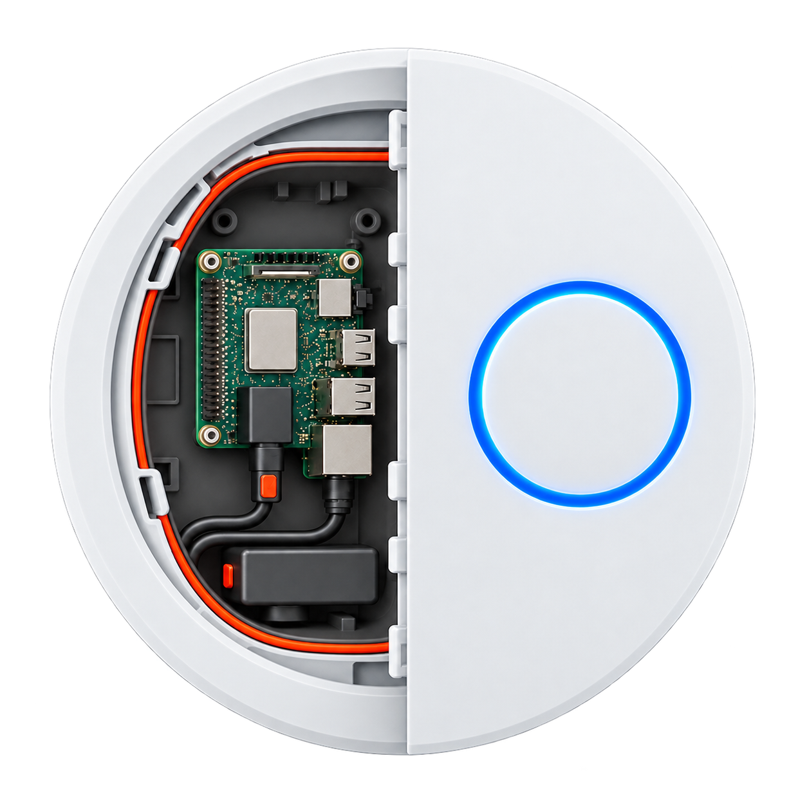
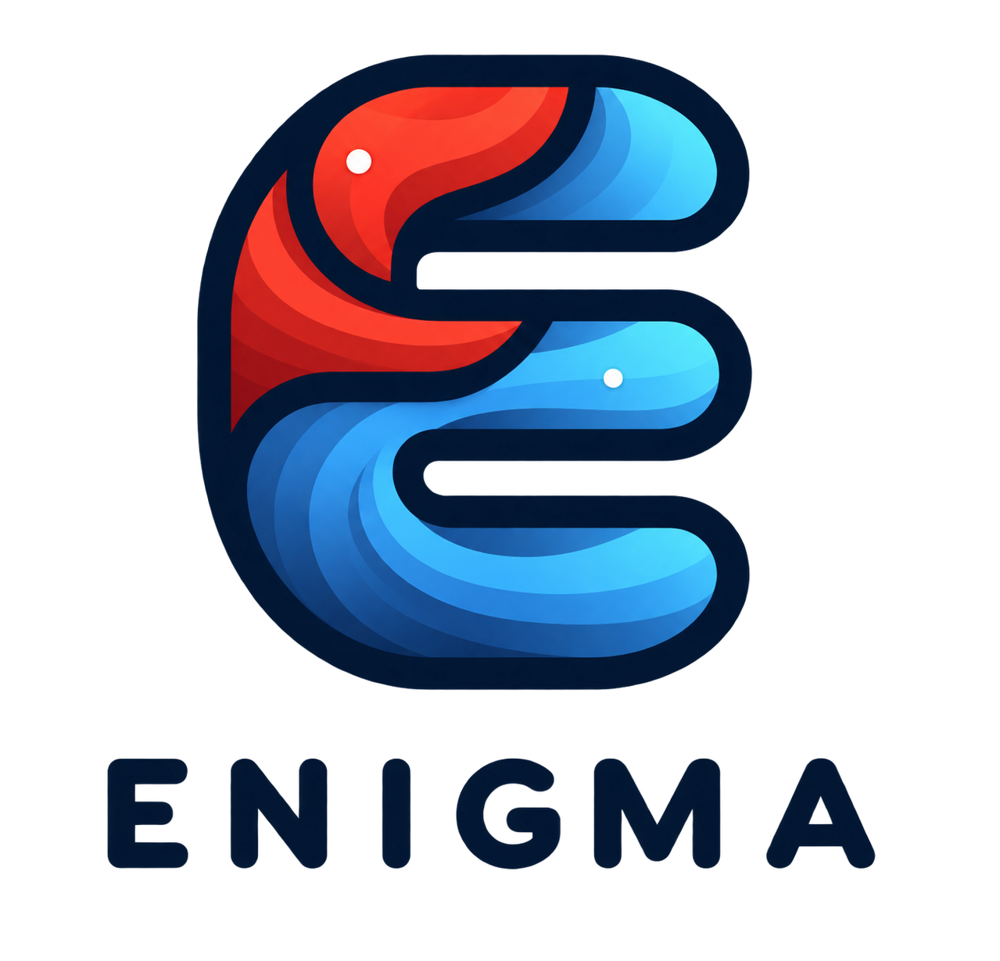
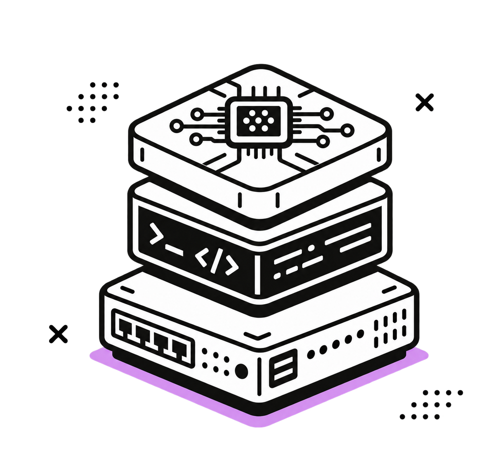

J’analyse les systèmes.
Je sécurise les réseaux.
Étudiant en Master 2 Cybersécurité à l’ESGI Reims, je travaille concrètement sur les réseaux et les systèmes : configuration, supervision et sécurité.
- 4expériences terrain
- 6projets techniques
- 4certifications
01 / À propos
De la compréhension
à la protection.
Passionné par l’informatique depuis l’enfance, j’ai choisi la cybersécurité pour comprendre les systèmes en profondeur — puis mieux les protéger.
J’aime comprendre comment les systèmes fonctionnent, les tester et les rendre plus sûrs.
02 / Statistiques personnelles
Des repères
concrets.
Quelques chiffres pour situer mon parcours, mes projets et les domaines dans lesquels je progresse.
03 / Book de compétences
Compétences
techniques.
Sélectionnez un domaine pour explorer les savoir-faire et technologies associés.
↓ Télécharger le book PDF
01
PROTÉGER · DÉTECTER · ANALYSER
Cybersécurité
Déployer des mécanismes de confiance, durcir les systèmes et observer les signaux faibles pour réduire la surface d’attaque.
MISE EN PRATIQUE
PKI complète, SIEM Wazuh, implant Red Team et environnement d’attaque/défense isolé.
04 / Projets sélectionnés
Construire pour
mieux comprendre.
Six projets qui croisent supervision, sécurité, infrastructure et automatisation.
01 — SUPERVISION / AGENTS
Portail RSG — Supervision centralisée
Portail de supervision Ready Study Go : application Laravel qui centralise les informations des postes et serveurs via des agents Windows et Linux, avec interface web et API dédiées.
- Application Laravel, migrations MariaDB et interface de supervision
- Création, distribution et suivi d’agents Windows et Linux
- Déploiement Apache, services systemd, sauvegarde et récupération documentés
LaravelMariaDBApacheAPIAgents


$ rsg-agent.status()✓ agents Windows connectés✓ agents Linux connectés✓ API opérationnelle
02 — RED TEAM / BLUE TEAM
PAF — Pénétration Attaque Furtive
Implant matériel Red Team basé sur un Raspberry Pi, avec collecte d’informations réseau et exfiltration vers un serveur C2 Havoc.
LinuxHavocProxmoxPython



03 — DEVOPS
Pipeline CI/CD Flask + Jenkins
Chaîne d’intégration et de déploiement continus pour l’application Flask « Chicago Art Explorer » : tests, image Docker et déploiement automatisé sur VM Rocky.
JenkinsDockerFlaskGitHubBash


$ pipeline.run()✓ tests✓ build✓ deploy
04 — CRYPTOGRAPHIE
Infrastructure PKI & HTTPS
Mise en place d’une autorité de certification sous Rocky Linux, génération de certificats et sécurisation HTTPS de serveurs Debian et Rocky.
OpenSSLPKITLSApache2Nginx


05 — AUTOMATISATION SÉCURITÉ
Enigma
Script de semi-automatisation qui orchestre des outils de test de sécurité pour accélérer les phases de reconnaissance, de vérification et de restitution dans un environnement autorisé.
PythonBashAutomatisationPentest



06 — AGENT & INFRASTRUCTURE
Omnidev
Solution d’agent personnalisé accompagnée d’une infrastructure de test sur mesure, pensée pour automatiser des scénarios de validation de sécurité et centraliser les résultats.
AgentsInfrastructureDockerAutomatisation

05 / Certifications
Valider les
fondamentaux.
Consolider mes compétences.
CCNA
Routage, commutation, réseaux sans fil, sécurité et automatisation.
Cisco Networking AcademyTOEIC
860 points — anglais professionnel
ETS06 / GitHub
Le code, en
pratique.
Un aperçu de mes dépôts publics et de mon activité de développement.
// GITHUB
LouisR6s
Chargement du profil…
—dépôts publics
—abonnés
—abonnements
Chargement des dépôts récents…
07 / Parcours
Expérience &
formation.
De la maintenance utilisateurs à l’administration d’infra.
Expériences
-
Alternant informatique
Développement d’un site interne de centralisation et de supervision, pour regrouper les informations utiles et suivre les besoins de l’équipe.
-
Administrateur réseau
Chasseurs de France ↗ · Châlons-en-Champagne
Gestion du réseau interne, maintenance du parc, supervision et déploiement d’un serveur sécurisé accessible depuis Internet.
-
Technicien réseau et matériel
SANEF ↗ · Reims / Tinqueux
Installation, configuration et maintenance des équipements ; supervision et suivi de la sécurité du SI.
-
Stage informatique
Institution Beaupeyrat ↗ · Limoges
Assistance, déploiement logiciel, maintenance du parc et gestion du réseau pédagogique.
-
Stage informatique
Découverte des infrastructures, maintenance des postes et sensibilisation à la sécurité.
Formation
Master 2 Cybersécurité
Master 1 Cybersécurité
Bachelor 3 Cybersécurité
BTS SIO — option SISR
Beaupeyrat ↗ · Limoges
Bac STI2D — option SIN
Dautry ↗ · Limoges
08 / LAB INTERACTIF
À toi de
rétablir le lien.
Simulation locale · PC-A ne joint plus PC-B. Diagnostique le switch, réactive le port et vérifie son VLAN.
// OUVERT AUX OPPORTUNITÉS
Parlons réseau,
sécurité et avenir.
Vous recherchez un profil impliqué, curieux et opérationnel pour renforcer votre équipe informatique ou cybersécurité ? Échangeons.